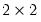
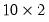
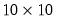

The first command creates and initializes the  matrix A so that it contains all zeros. Then after entering the two commands:
Note that the fill procedure provides an alternative to using loops for assignment (see, for example, the matrix object version of the procedure,
Matrix::fill).
The second assignment method is to use the fill object procedure to assign a list of numbers to each element of the matrix in the specified order. By default, the procedure fills the matrix column by column, but you may override this behavior to fill by rows.
You should enter the name of the matrix object, followed by a period, the fill keyword, and then a
comma delimited list of values. For example, the commands:
See Matrix::fill for a complete description of the fill procedure for a matrix. Equivalent procedures are available for the remaining matrix objects.
If the source object on the right is a matrix or vector, and the
target or
destination object on the left is of the same type, the target will be resized to have the same dimension as the source, and every source element will be copied. For example:
declares that ZDATA is a  matrix filled with 5’s. In the second line,
YDATA is automatically resized to be a

matrix and is filled with the contents of
ZDATA.
The third line declares and initializes XDATA. Note that even though the declaration of XDATA calls for a  matrix,
XDATA is a

matrix of 5’s. This behavior occurs because the declaration statement above is equivalent to issuing the two commands:
which will first declare the  matrix XDATA
matrix XDATA, and then automatically resize it to when you fill it with the values for
YDATA (see also
“Copying Data From Matrix Objects”).
These use of these functions are straightforward. While @fill and
@seq will work with arbitrary numeric values, one important application is in generating vectors of integer values.


 matrix
matrix  identity matrix, while
identity matrix, while